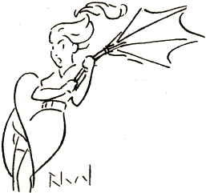

„Salte-dance, hop kaj hop!
Jen alvenas en galop'
Rajdoside sur skarabo
La Printempo, ĉarma knabo.
Junaj herboj, florburĝonoj
Jam borderas lian vojon
Kaj ĉielaj violonoj
Sorĉe zumas novan ĝojon!“
Tiel do, aŭ proksimume,
Poezio ekspluatas
La Printempon; ― interdume
Pli praktike mi konstatas,
Ke venteto-petolulo
Helpas miajn priokupojn:
Li ĉe ĉiu stratangulo
Blovas sub knabinajn jupojn ...

Jen printempsezona ĝuo!
Mi admiras la naturon,
Se ĝis super la genuo
Ĝi malkovras belan kruron.